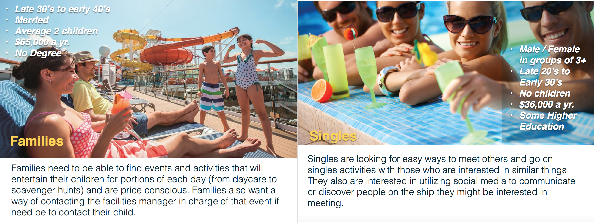
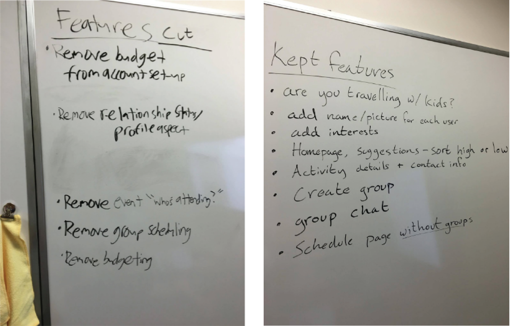
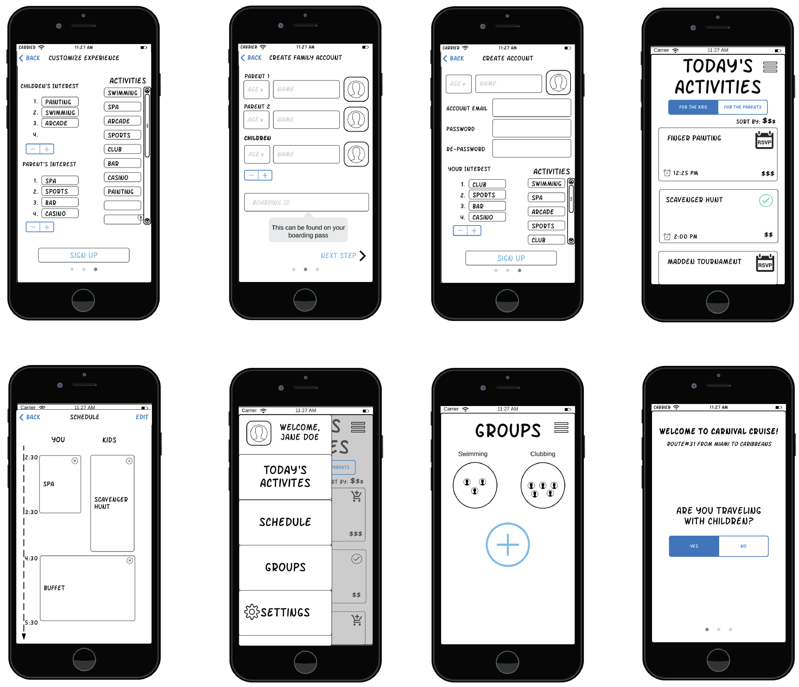
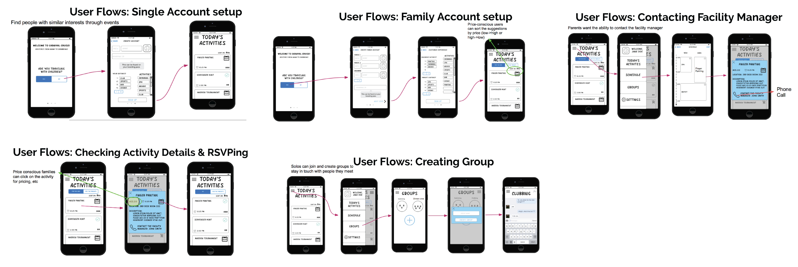
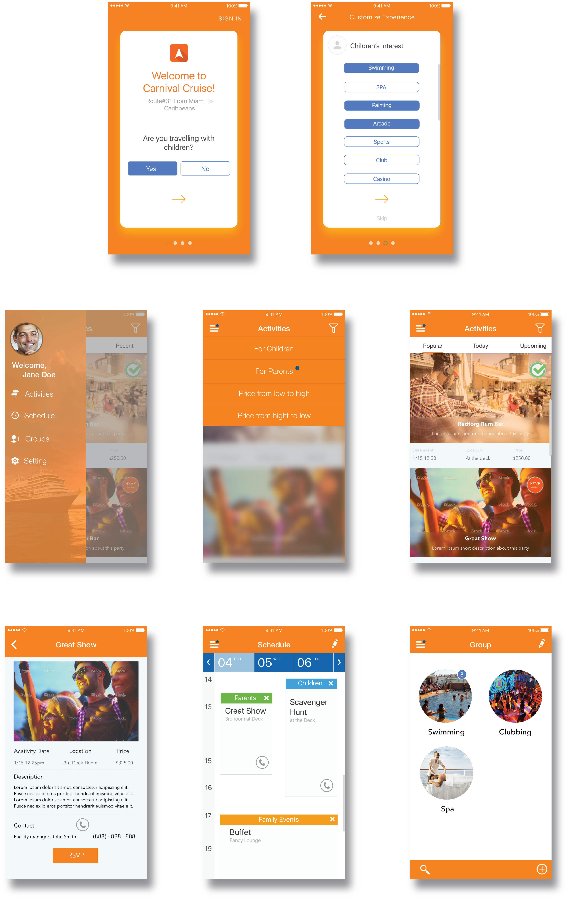

Overview
This is a iPhone application designed for Carnival Cruise Lines. The goal of this app is to have users be able to easily discover what events are available in the cruise based on their interests, and book them, as well as provide to the customer control of how they use their leisure time and what they do while aboard the ship.
- DATE: Mar - Jun 2016
- CREATED WITH: Sketch
- ROLE: Prototype, User testing, Visual Design
Problem
Carnival has many potential customers that now bypass traveling by cruise ships as vacationers have changed how they plan trips. In response to this, the cruise line industry has tried to make the cruise ship itself a highlight destination with events and attractions to entice travelers. However, due to the sheer volume of activities and events provided, it is difficult for guests to know what is available and what would most interest them.
Design Process
Personas
We are given two persona by the instructor and design a solution for the following consumption. And our goals is to that will simplify discovering for the two target personas. Activities should be personalized based on their persona and interests. The app should guide users in discovering events and activities, then ordering a reservation for each event. Also we want to make sure there are ways for people traveling together to share and collaborate.

Whiteboarding
The target users for the app are family travelers and solo travelers, therefore different user groups will have different features according to their identity. We first brainstormed the features that are necessary to have.
Main features
Suggest activities based on user’s interests.
Allow for monitoring budget and spendings on the ship.
Allow users to connect to other people on the cruise and form “groups” on the app.
Allow users to view who is attending each event.
Allow for scheduling events for kids, and provide contact to event managers.
App is specifically focused and tailored for any one cruise ship. (Only works on the ship’s wifi).
Allow users to add payment information.

Paper Prototype
After some consideration we decided to remove many features that we thought were nice-to-have, but were not necessarily must-haves to meet the needs of our two target users.

Features Removed: Budgeting
After having a debate about the value that a budget feature would give users, we decided that it might be a feature unused by users and is outside of the scope of our design
If users are very concerned about their spending, they most likely have another app (Bank account app, Mint, etc.) that manages their finances
We still want to give users the option to be price conscious by allowing them to sort events/activities by price, but we don’t want to make their decisions for them
Features Removed: Relationship Status/Profile
We decided to remove the user profile feature because we felt that it was a nice feature to have, but was not a must-have
We felt that it was our goal to get users to meet each other at events/activities, rather than allowing them to meet online before in-person because the experience of discovering individuals on the ship would be more organic
Didn’t want to mimic Facebook
Features Removed: “Who’s Attending”
We removed the “Who’s Attending?” feature from the event information page because we felt like it wasn’t a must have feature.
We felt like this feature wouldn’t add much value to the user experience because users will be attending events based on their interests and group’s plans. Their decisions will not be influenced by the guest list very often.
Features Removed: Group Scheduling
There would be too much information on the schedule page if a user was in multiple groups. We want to give users flexibility and freedom. They can be in multiple groups and also participate in activities alone. If a user schedules an event as a group, not everyone in the group may want to go. We want to help users make their decisions, but not make them for them
Features Kept: Kids or Nah?
Families have more information to enter in order to get the parents’ and kids’ interests, while solo travellers just have to enter info for themselves. We want to allow the families to keep this functionality without cluttering the app for the solo-traveller. So we have different login processes for each.
Features Kept: Name & Picture
If each user has a name and picture, then the group chat feature will become a more intimate experience.
Having pictures for the kids on file will allow event managers to identify the kids to their parents
Features Kept: Interests
Solo travellers want to meet new people with similar interests, so having the app suggest events based on interests will mean that the solo traveler can find others at these events.
For families, this feature can help customize the experience for the kids and the parents
Features Kept: Activity Suggestion & Sort By $$$
The homepage suggestions are the primary way of integrating the user interests.
Replaced the budget feature with an option to sort by price. This is a simple way to help price-conscious users find cheaper events.
Features Kept: Activity Details -- contact information
Allows users to decide for themselves if they want to do the event so they don’t have to blindly follow the suggestion
Allows parents to contact the manager of the event if they need to contact their kid
Features Kept: Groups
Solo travelers want a way to communicate with other people on the ship, so we’ve integrated a chat feature that allows them to have conversations as a group.
Users might not stick with one group of people. They can create/join groups with people that they meet on the ship.
Features Kept: Schedule
After users RSVP to an event, it automatically gets added to their daily schedule.
Users can easily view their activities for the day
Parents can click to view their own schedule or their children’s schedule

User Flow

Wireframes
Based on the iteration of features of the application, I created a higher fidelity prototype followed with the revised paper prototype. It aims to simplify user flows when possible, enhance user experience through feedback and other cues and give users more freedom.
